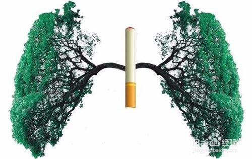

有多少人批判超级中学，就有多少人向往
25k阅读 | 35分钟前发布
教育
考试
每个人都或多或少听说过“超级中学”这个说法，也许屏幕前的你本身便毕业于这类学校。
作为中学尤其是高中阶段教育实践的缩影，它们炙手可热，又饱受非议。许多人坚持超级中学是应试教育的畸形产物，
掠夺了教育资源，破坏了教育公平，理应被取缔。但这一观点很难得到多数家长的支持——他们相信，进入超级中学便
意味着孩子半只脚踏进了知名大学的校门，几乎所有人都希望自己的下一代在这场教育竞争中赢得先机。
超级中学是一个约定俗成的概念，但成为超级中学到底需要怎样的条件？
北京大学黄晓婷等人曾概括其四个特征：位于省会或大城市、学生规模大、垄断当地一流生源和教师、毕业生垄断一流大学
在该地区的录取计划。其中，后两者是超级中学的必要条件。
考虑到师资和生源实质也是为升学服务，因此，是否拥有极高的升学质量通常是划定超级中学的共通标准。在黄晓婷等人的研究中，
某名校“K大”在各省份的录取名额高度集中，超级中学通常会占据全省三成甚至一半以上的录取名额。
另一种是精英化的超级中学，学生规模更小，且通常位于大城市。在这类学校，高考并不是唯一的道路——以南京外国语学校为例，2016年，
南外有270余名学生出国留学，前往美国综合排名前20大学的毕业生有73人。 而在该校，选择参加高考的学生仅有35位，但算上竞赛类、
语言类保送生，依然有24位同学进入北大、清华。 可见，仅把超级中学与应试教育划上等号，其实并不准确。无论是中产阶级倡导的素质
教育，还是老百姓早已熟知的应试教育，它们都成为两者中的排头兵，被视为不折不扣的升学导向学校。
失意的农村学生
在应试教育向素质教育转向的缓慢趋势中，农村学生通常是最失意又失语的群体，而这也是此前超级中学饱受诟病的原因之一。 同样是黄 晓婷等人的研究，她们对“K大”也就是北京大学2005至2009年五届学生的户籍类型进行了数据分析。结果显示，来自超级中学的 学生中农村户籍的比例仅为普通中学的八分之一。相关推荐
吴彦祖 | 低调亮相戛纳红毯，不老男神再现行走的荷尔蒙！
100k阅读 10k评论
气象医学 | 春尽夏来是小满，养生需备清热治胃饮
2k阅读 4k评论

深圳卫健委 | 上车前来一根！深圳北站40分钟抓6名违法吸烟者
11k阅读 5k评论

文 | 九江银行湖口支行29岁女行长杨沁挂职湖口县副县长一事引发
1k阅读 100评论
资本 | 告急，南京银行再抛140亿元定增方案
100阅读 30评论
中国农业大学 | 2019年招生政策有什么变化？
1k阅读 300评论
任正非 | 反对煽动民族情绪，对狭隘爱国者说“不”
4k阅读 2k评论
胡润慈善榜 | 恒大许家印、碧桂园杨国强进前五，章泽天成唯一“90后”
2k阅读 600评论